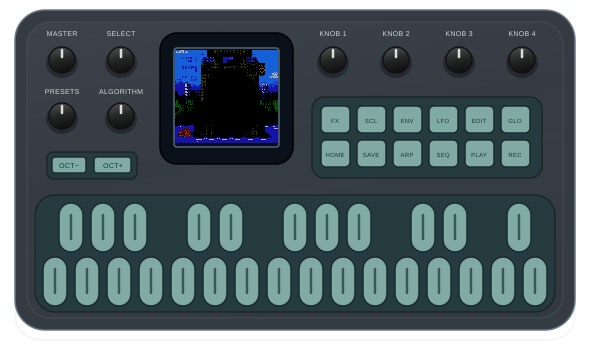

INSERT CARTRIDGE. PRESS START.
NES games.
Synth hardware.
Your favorite little synth has a new game to play. Load a cartridge, turn up the chiptunes, and take 8-bit adventures from your browser to the FM-1 or SMK-37.
FM-1: USB install · SMK-37 Pro / Elite: experimental USB install


Play in your browser.
Drop a .nes or .zip onto the screen or console to play, then install the same game on your instrument.
GAME SIMULATOR
03VHF / UHFVOLUMEPOWER
Sound starts when you load a cartridge or use a game control.
- MOVE
- Arrows / WASD
- A / B
- Enter / X · Space / Z
- START / SELECT
- P / Shift
Try it: move the diamond. Hold A to change pitch, B to change color.
TAKE IT TO YOUR KEYBOARD
Install on your FM-1.
Choose a game, plug in your FM-1, and install it here. No downloads or compiler needed.
Choose your game
Choose a gameYour files stay on this computer. The selected game is shared by the browser player and installer.
Or choose a free game:
Loading emulator…
Browse your ROM folder
Choose a folder to browse its .nes and .zip files locally. Nothing is uploaded.
No folder selected.
Try the diagnostic cartridge
NTSC · iNES 1.0 · Mappers 0, 1, 2, 3, 4, 9 & 11. The diagnostic is a small built-in test game.
Connect your FM-1
USBTurn it on and connect it directly to this computer with a USB data cable. Use Chrome or Edge and allow MIDI access.
Factory M-VAVE V15 works here. Disconnect the XIAO recovery adapter. Close other MIDI apps and unplug other instruments.
No device connected.
Prepare your game
Not preparedThis makes the game ready for your FM-1 in this browser. Your instrument is changed only when you press Install.
Save a firmware file (optional)
You can install directly from this page. Download only if you want a copy for later.
Download .fwscChecking firmware version…
Install and play
Not installedInstalling replaces the synth application with this game. Keep power and USB connected until the restart is verified. Game saves on the FM-1 last until restart.
Choose a game and prepare it above to enable installation.
Choose a game to get started.
Transfer details & recovery
Keep your instrument connected until its restart is verified.
FM-1 not showing up?
Connect the FM-1 directly by USB, with the recovery adapter disconnected. Turn it off and on normally so the synth screen appears. Allow MIDI / SysEx access for this site, close other MIDI tabs or apps, and try Connect FM-1 again.
If a transfer was interrupted, keep your instrument powered and use Retry install / resume. A connection check by itself does not install anything.
Return to the original M-VAVE synth
Restore the official M-VAVE V15 firmware. The file is included and verified before any transfer. This replaces NESynth with the original synth application.
Connect your FM-1, then press Restore M-VAVE firmware.
Compatibility & hardware status
NTSC NES cartridges with mapper 0, 1, 2, 3, 4, 9 or 11. FM-1 picture, controls, USB updating and both cores have been tested; game compatibility remains experimental. SMK-37 Pro and Elite USB installers are experimental candidates with packaging and updater simulations complete; physical validation is pending. They retain the GameDude controls.
THE STARTER COLLECTION
Small cartridges. Big ideas.
Three free homebrews. One click to play.
Or bring your own .nes or .zip.
02 / CODE-BREAKING PUZZLE
CodeMaster
Four symbols. Ten guesses. Crack the secret code.
Daniel Vukelich · GPL-3.003 / MINI ARCADE
Diamond Chase
A tiny chase with a chiptune reward. Find the yellow target.
TeneoPython01 · MITBattery saves stay in this browser. Export a copy to take them with you.